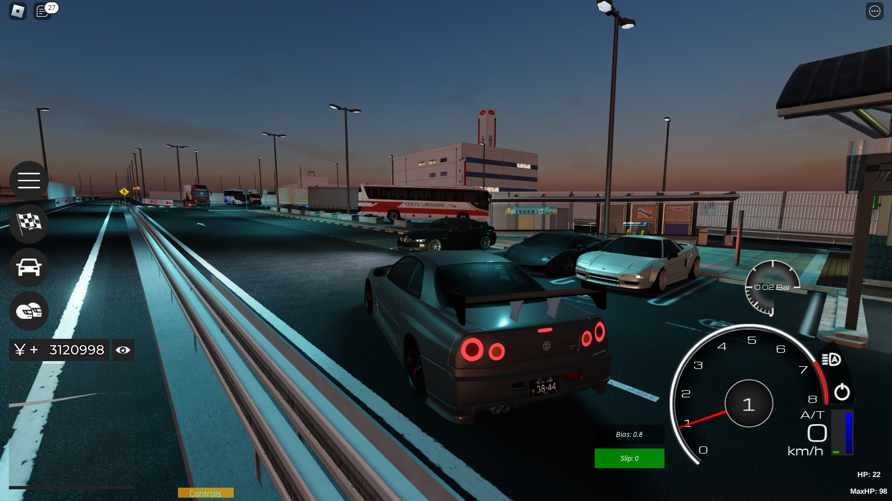

Midnight Racing: Tokyo
เป็น Map Roblox เเนวเเข่งรถที่ผมคิดว่าทำดีมากๆด้วยเรื่องของโมเดลตัวรถโมเดลด่านสนามเเข่งเเละทั้งภาพเเละเสียงของเครื่องรถยนต์ที่ทำออกมาดีมากๆ เกมนี้สำหรับคนที่ชอบพวกรถ JDM หรือพวกรถ ยุค 80-90 ของญี่ปุ่นคงถูกใจไม่น้อย เพราะ มีรถ ให้เลือกเยอะมากๆ สำหรับผมเเล้วเกมนี้เป็นเกมขับรถที่มันที่สุด สนุกที่สุดเเละสมจริงที่สุดใน Roblox ซึ่งMap Midnight Racing: Tokyo นี้เราจะต้องเเข่งรถกับผู้เล่นคนอื่นๆ เพื่อที่จะได้เงินมาซื้อรถใหม่หรือเเต่งรถจูนรถของเราให้เเรงขึ้นเเละ เกมนี้มีระบบเเต่งรถที่น่าสนใจมากๆ เราสามารถเเต่งภายในของรถได้เช่นจูนเครื่องยนต์ติดเทอร์โบให้เเรงม้าของรถเยอะขึ้นเเละยังมีอื่นๆอีกที่เราสามารถปรับเเต่งได้ เเละอีกอย่างเราสามารถเเต่งภาย นอกของรถยนต์ได้ด้วยเช่น Bodyตัวรถ กันชนหน้า spoiler ฝากระโปรงรถ ล้อแม็ก สีตัวรถ ลวดลายสติ๊กเกอร์เเละอื่นๆอีกเยอะ เกมนี้เลยเหมาะกับสายซิ่งเเบบผมมากๆ
